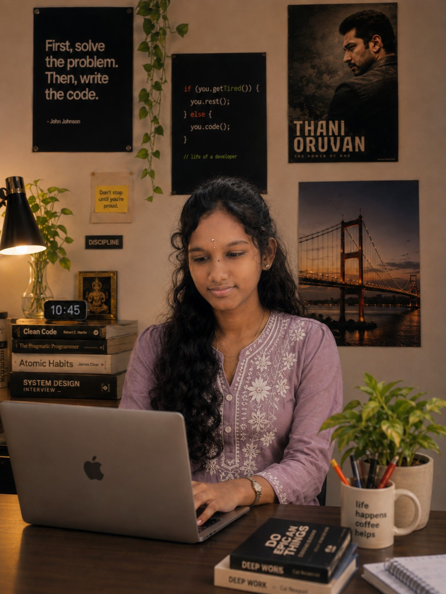

01Web Platform
HappiMoM
A maternal & reproductive health platform focused on accessible workflows, practical information, and a smoother user experience.
Computer Science • Testing • Web
Curious about how things work—and even more curious about how to make them work better.

I’m a Computer Science student who enjoys the space between building something and making sure it actually works for people.
My projects have taken me through web interfaces, data, testing, and AI-assisted learning workflows. I’m especially interested in roles where curiosity, attention to detail, and technical problem-solving matter.
A few projects that show how I think, build and solve.
A maternal & reproductive health platform focused on accessible workflows, practical information, and a smoother user experience.
An AI-assisted virtual lab workflow designed around real-time error detection, explanations, experiment progress, and faculty monitoring.
An interactive Power BI dashboard for visualizing and tracking student marks across internal assessments.
Java • JavaScript • HTML • CSS • React.js • Node.js
Manual Testing • Functional Testing • UI/UX Testing • SDLC • STLC • Bug Reporting • JUnit
SQL • Power BI • MS Excel • Data Visualization & Reporting
GitHub • Jira • Zephyr Scale • Trello • IntelliJ IDEA • Firebase • Supabase • Netlify • WordPress
Learning by building, testing and trying again.
Hands-on testing experience across web and mobile applications, with focus on functionality, usability, navigation, defect reproduction and reporting.
Mahendra Institute of Technology · Currently pursuing · CGPA 9.4
Technical events, learning experiences and the small things that make college memorable.
Volunteered at a college Women’s Day celebration by conducting and coordinating a fun game for the girl students, helping make the event engaging and inclusive.
Start with the problem, not the code.
Keep solutions practical, clear and useful.
Look for the edge cases before users do.
Learn from feedback and keep iterating.
I’m always interested in learning, building, and connecting with people working on meaningful technology.